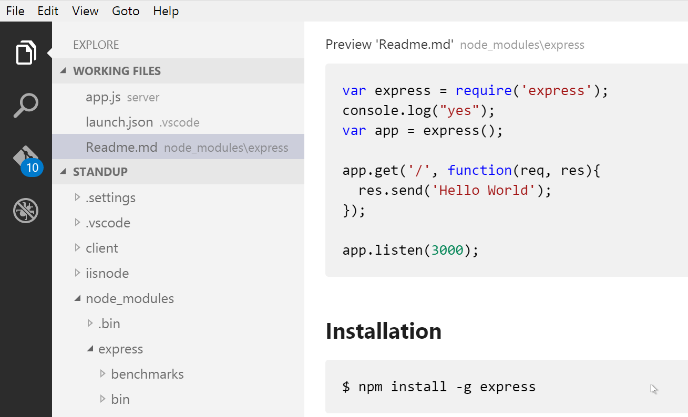
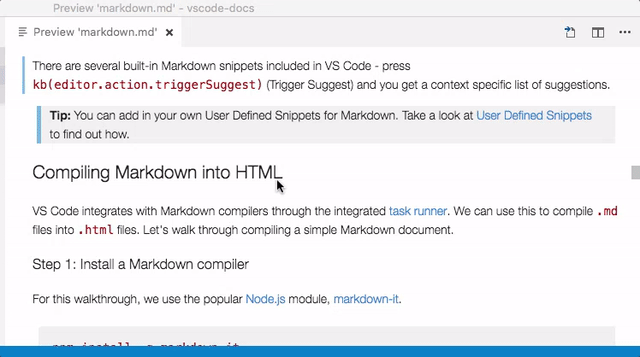

Working with Markdown files in Visual Studio Code is simple, straightforward, and fun. Besides VS Code’s basic editing, there are a number of Markdown specific features that will help you be more productive.
Markdown Extensions
In addition to the functionality VS Code provides out of the box, you can install an extension for greater functionality.
Tip: The extensions shown above are dynamically queried. Click on an extension tile above to read the description and reviews to decide which extension is best for you. See more in the Marketplace.
Markdown Preview
VS Code supports Markdown files out of the box. You just start writing Markdown text, save the file with the .md extension and then you can toggle the visualization of the editor between the code and the preview of the Markdown file; obviously, you can also open an existing Markdown file and start working with it. To switch between views, press ⇧⌘V (Windows, Linux Ctrl+Shift+V) in the editor. You can view the preview side-by-side (⌘K V (Windows, Linux Ctrl+K V)) with the file you are editing and see changes reflected in real-time as you edit.
Here is an example with a very simple file.

Tip: You can also right-click on the editor Tab and select Open Preview or use the Command Palette (⇧⌘P (Windows, Linux Ctrl+Shift+P)) Markdown: Open Preview and Markdown: Open Preview to the Side commands.
Editor and Preview Synchronization
When working with a Markdown preview to the side of your editor, VS Code can synchronize the view of the editor and the preview. By default, the Markdown preview will automatically scroll to reveal the element at the selected line in the editor.

This behavior can be disabled using the markdown.preview.scrollPreviewWithEditorSelection setting.
The currently selected line is indicated in the Markdown preview by a light gray bar in the left margin:

Also, when the Markdown preview is scrolled, the editor will scroll along with it:
This can be disabled using the markdown.preview.scrollEditorWithPreview setting.
Additionally, double clicking an element in the Markdown preview will automatically open the editor for the file and scroll to the line nearest the clicked element.

Using your own CSS
By default, we use a CSS style for the preview that matches the style of VS Code. If you want to use your own CSS for the Markdown preview, update the "markdown.styles": [] setting with the comma-separated list of URL(s) for your style sheet(s).
For instance, in the screen shot above we used a custom CSS that changes the default font for the page and changes the color for the H1 title.
Here is the relevant CSS:
|
Use File > Preferences > Workspace Settings to bring up the workspace settings.json file and make this update:
|
Snippets for Markdown
There are several built-in Markdown snippets included in VS Code - press ⌃Space (Windows, Linux Ctrl+Space) (Trigger Suggest) and you get a context specific list of suggestions.
Tip: You can add in your own User Defined Snippets for Markdown. Take a look at User Defined Snippets to find out how.
Compiling Markdown into HTML
VS Code integrates with Markdown compilers through the integrated task runner. We can use this to compile .md files into .html files. Let’s walk through compiling a simple Markdown document.
Step 1: Install a Markdown compiler
For this walkthrough, we use the popular Node.js module, markdown-it.
|
Note: There are many Markdown compilers to choose from beyond markdown-it. Pick the one that best suits your needs and environment.
Step 2: Create a simple MD file
Open VS Code on an empty folder and create a sample.md file.
Note: You can open a folder with VS Code by either selecting the folder with File > Open Folder… or navigating to the folder and typing
code .at the command line.
Place the following source code in that file:
|
Step 3: Create tasks.json
The next step is to set up the task configuration file tasks.json. To do this, open the Command Palette with ⇧⌘P (Windows, Linux Ctrl+Shift+P) and type in Configure Task Runner, press Enter to select it.
VS Code then presents a list of possible tasks.json templates to choose from. Select Others since we want to run an external command.
This generates a tasks.json file in your workspace .vscode folder with the following content:
|
To use markdown-it to compile the Markdown file, change the contents as follows:
|
Tip: While the sample is there to help with common configuration settings, IntelliSense is available for the
tasks.jsonfile as well to help you along. Use ⌃Space (Windows, Linux Ctrl+Space) to see the available settings.
Under the covers, we interpret markdown-it as an external task runner that exposes exactly one task: the compiling of Markdown files into HTML files. The command we run is markdown-it sample.md -o sample.html.
Step 4: Run the Build Task
As this is the only command in the file, you can execute it by simply pressing ⇧⌘B (Windows, Linux Ctrl+Shift+B) (Run Build Task). At this point, you should see an additional file show up in the file list sample.html.
The sample Markdown file did not have any compile problems, so by running the task all that happened was a corresponding sample.html file was created.
Automating Markdown compilation
Let’s take things a little further and automate Markdown compilation with VS Code. We can do so with the same task runner integration as before, but with a few modifications.
Step 1: Install Gulp and some plug-ins
We use Gulp to create a task that automates Markdown compilation. We also use the gulp-markdown plug-in to make things a little easier.
We need to install gulp both globally (-g switch) and locally:
|
Note: gulp-markdown-it is a Gulp plug-in for the markdown-it module we were using before. There are many other Gulp Markdown plug-ins you can use, as well as plug-ins for Grunt.
You can test that your gulp installation was successful but typing gulp -v. You should see a version displayed for both the global (CLI) and local installations.
Step 2: Create a simple Gulp task
Open VS Code on the same folder from before (contains sample.md and tasks.json under the .vscode folder), and create gulpfile.js at the root.
Place the following source code in that file:
|
What is happening here?
- We are watching for changes to any Markdown file in our workspace, i.e. the current folder open in VS Code.
- We take the set of Markdown files that have changed, and run them through our Markdown compiler, i.e.
gulp-markdown-it. - We now have a set of HTML files, each named respectively after their original Markdown file. We then put these files in the same directory.
Step 3: Modify the configuration in tasks.json for watching
To complete the tasks integration with VS Code, we will need to modify the task configuration from before to run the default Gulp task we just created. We will set isBackground to true so that the task is kept running in the background watching for file changes.
Change your tasks configuration to look like this:
|
Step 4: Run the gulp Build Task
We marked this task as isBuildTask so you can execute it by simply pressing ⇧⌘B (Windows, Linux Ctrl+Shift+B) (Run Build Task). But this time since we’ve set isBackground to true, the task keeps running. At this point, if you create and/or modify other Markdown files, you see the respective HTML files generated and/or changes reflected on save. You can also enable Auto Save to make things even more streamlined.
If you want to stop the task, you can use the Tasks: Terminate Running Task command in the Command Palette (⇧⌘P (Windows, Linux Ctrl+Shift+P)).
Next Steps
Read on to find out about:
- Customization - Dig into additional settings such as word wrap and User Defined Snippets.
- CSS, Less and Sass - Want to edit your CSS? VS Code has great support for CSS, Less and Sass editing.
Common Questions
Q: Is there spell checking?
A: Not installed with VS Code but there are spell checking extensions. Check the VS Code Marketplace to look for useful extensions to help with your workflow.
Q: Does VS Code support GitHub Flavored Markdown?
A: No, VS Code targets the CommonMark Markdown specification using the markdown-it library.
Q: In the walkthrough above, I didn’t find the Configure Task Runner command in the Command Palette?
A: You may have opened a file in VS Code rather than a folder. You can open a folder by either selecting the folder with File > Open Folder… or navigating to the folder and typing code . at the command line.